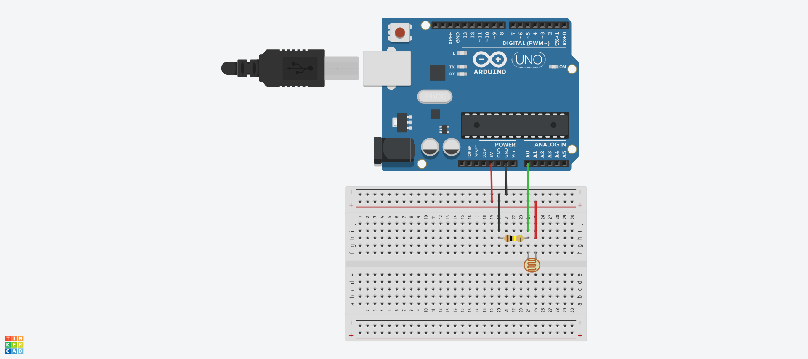
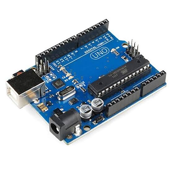
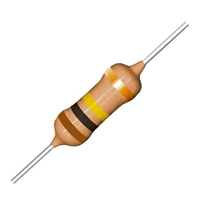
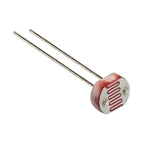
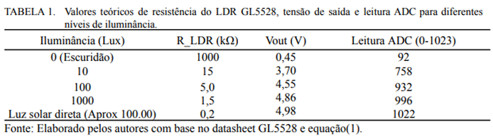
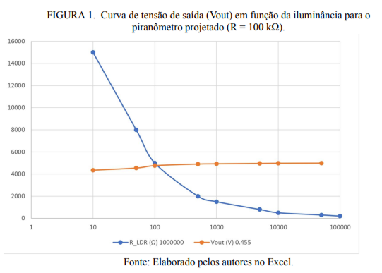

Piranômetro Open
Modelagem e Simulação de um Sensor de Irradiância
Este é um projeto acadêmico do IFSP Guarulhos que constrói um medidor de irradiação solar de baixo custo utilizando Arduino Uno e LDR GL5528, substituindo equipamentos comerciais que custam centenas de reais por uma solução abaixo de R$ 30,00.

O Problema
Piranômetros comerciais de alta precisão são baseados em termopilhas e têm custo elevado, o que inviabiliza seu uso em projetos educacionais, pesquisas de pequena escala e iniciativas de monitoramento ambiental de baixo orçamento. O projeto investiga se é possível substituir esse instrumento por um arranjo com fotoresistor de sulfeto de cádmio (CdS) e dimensioná-lo analiticamente para evitar a saturação precoce do sinal.
Resultado alcançado: Sensibilidade adequada na faixa de 0 a 1000 Lux com custo estimado inferior a R$ 30,00 — uma redução superior a 95% em relação aos modelos profissionais.
Como Funciona
O circuito utiliza a topologia de divisor de tensão combinando o LDR GL5528 com um resistor de carga de 100 kΩ (dimensionado por média geométrica). Essa configuração garante excelente sensibilidade na faixa de 0 a 1000 Lux e evita a saturação precoce na leitura analógica enviada ao microcontrolador.
Dimensionamento e Cálculos
- V_out: Tensão de saída analógica enviada ao pino A0 (V)
- V_CC: Tensão de alimentação contínua do barramento (5V)
- R_LDR: Resistência variável do fotoresistor LDR (Ω)
- R: Resistência do resistor fixo de carga (100 kΩ)
Para garantir a máxima sensibilidade do circuito, o dimensionamento do resistor de carga (R) foi realizado por meio do cálculo da média geométrica entre os extremos nominais de operação teórica (R_escuro = 1 MΩ e R_10 Lux = 15 kΩ), resultando no valor comercial padronizado de 100 kΩ.

Arduino Uno
Clique para ver a ficha técnica 🔍

Resistor 100 kΩ
Clique para ver a ficha técnica 🔍

LDR GL5528
Clique para ver a ficha técnica 🔍
Simulação e Resultados
O dimensionamento analítico e a modelagem matemática permitiram prever com precisão o comportamento do piranômetro. Utilizando a equação do divisor de tensão, simulou-se o circuito no Autodesk Tinkercad Circuits sob diferentes níveis de iluminância.
Valores Teóricos e Leitura ADC

Curva de Calibração Logarítmica

Conforme os testes, o resistor de 100 kΩ proporcionou excelente sensibilidade na faixa de 0 a 1000 Lux, com V_out variando de 0,45 V a 4,86 V.
📡 Central de Medição em Tempo Real
Conecte o piranômetro via USB para receber as leituras de irradiância enviadas pela porta serial do microcontrolador em tempo real:
Irradiância Lâmpada
Irradiância Luz Solar
📈 Gráfico de Irradiância em Tempo Real
Acompanhe a variação instantânea da luz captada pelo piranômetro ao longo do tempo:
🔌 Guia Interativo do Circuito e Pinout
Selecione um dos componentes ou pinos de ligação para visualizar o seu papel no divisor de tensão do piranômetro:
Arduino Uno R3
Placa principal de processamento. Executa o conversor Analógico-Digital (ADC) de 10 bits no pino A0, convertendo a tensão recebida (0V a 5V) num valor numérico de 0 a 1023 para transmissão via porta serial.
- ⚡ Alimentação: USB 5V ou Vin 7-12V
- 📊 Resolução ADC: 10 bits (4,88 mV por divisão)
- 📡 Comunicação: Serial UART (Baudrate 9600 bps)
Título do Componente
Descrição técnica detalhada...
Equipe do Projeto
Graduandos em Engenharia de Computação — IFSP Câmpus Guarulhos